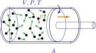

Capítol 1 Les propietats i el comportament dels gasos
(darrera actualització: 8 d’abril de 2026)
Índex
L’estudi dels gasos és fonamental per a comprendre el comportament de la matèria en estat gasós. Aquests conceptes són claus tant en la química moderna com en l’aplicació industrial. Les lleis dels gasos proporcionen una base per descriure el comportament macroscòpic dels gasos en funció de la temperatura, el volum i la pressió. Aquestes lleis són fonamentals per a la comprensió de molts processos químics i físics, com ara la termodinàmica, la cinètica química i la química de superfícies.
1.1 Les lleis dels gasos
En general, el volum d’un gas està determinat per la seva temperatura i la pressió que suporta. Existeix una relació matemàtica entre aquests paràmetres, que s’expressa com l’equació d’estat:
on  és el volum,
és el volum,  és la temperatura,
és la temperatura,  la pressió, i el nombre de mols del material. Es tracta d’una equació que pot ser molt complexa i específica per a líquids i sòlids, però en el cas dels gasos tots ells tenen un comportament molt similar. Això és degut a que en l’estat gas, les molècules són mes independents entre elles i, per tant, la seva naturalesa
molecular no afecta substancialment al comportament del tot.
la pressió, i el nombre de mols del material. Es tracta d’una equació que pot ser molt complexa i específica per a líquids i sòlids, però en el cas dels gasos tots ells tenen un comportament molt similar. Això és degut a que en l’estat gas, les molècules són mes independents entre elles i, per tant, la seva naturalesa
molecular no afecta substancialment al comportament del tot.
De partícules i mols de partícules
El mol és la unitat bàsica del Sistema Internacional per mesurar la quantitat de substància, i s’utilitza per comptar partícules com àtoms, molècules o ions. Un mol conté exactament entitats elementals, un valor conegut com el nombre d’Avogadro. Aquesta constant permet connectar les dimensions microscòpiques (com la massa i el nombre de partícules) amb mesures macroscòpiques utilitzades en els experiments químics. Per exemple, un mol d’àtoms de carboni-12 (que representarem per , a partir d’ara) té una massa de 12 grams, facilitant així la relació entre l’estructura atòmica i la pràctica de la química.
1.1.1 Pressió i força
Un dispositiu típic per mesurar la pressió és el baròmetre, que utilitza una columna de mercuri per determinar la pressió atmosfèrica.
La pressió és definida com la força per unitat d’àrea que un gas exerceix sobre les parets del recipient que el conté. S’expressa comunament en unitats com pascals (Pa) o atmosferes (atm). Matemàticament:
Per tant, la pressió es calcula com:
on és la densitat, l’acceleració gravitatòria i l’alçada.
Calculem ara què és una atmosfera quan s’expressa en funció de força per àrea unitaria. Considerem una columna de mercuri amb una alçada de 760 mm. Sabem que la densitat del mercuri és i l’acceleració gravitatòria és . Considerem un tub baromètric la superfície de secció transversal del qual és 1 cm2. Aleshores, la força que exerceix la columna de mercuri sobre aquesta superfície és igual a la massa del mercuri que es troba al tub, multiplicada per l’acceleració deguda a la gravetat. A la vegada, la massa del mercuri que està en el tub és el volum del mercuri multiplicat per la seva densitat a . Així doncs, es té:
La pressió dels pneumàtics
Les pressions en els pneumàtics normalment es donen en psi (psi), però és important saber si aquesta mesura és relativa a la pressió atmosfèrica o absoluta. Els manòmetres dels pneumàtics mesuren pressió relativa, excloent la pressió atmosfèrica.
Si un pneumàtic s’ha d’omplir a 35 psi de pressió absoluta, cal sumar la pressió atmosfèrica 14,7 psi, obtenint 20,3 psi en el manòmetre. Una mala interpretació pot portar a inflar o desinflar inadequadament el pneumàtic, afectant la seguretat i el rendiment del vehicle.
Aquesta és la força que exerceix una columna de mercuri de 760 mm d’alçada i d’1 de superfície de secció transversal. Per tant, és també la força per unitat de superfície (un centímetre quadrat) que correspon a la pressió d’una atmosfera. Així, es té que:
Els gasos es comporten segons certes lleis empíriques que han estat establertes experimentalment. Aquestes lleis condueixen finalment a la formulació de la llei dels gasos ideals.
Quantitats intensives i extensives
Les propietats es poden classificar entre extensives (m, V, ...) o intensives (T, P, capacitat calorífica ...), segons depenguin de la quantitat de substància o no. La raó entre dues propietats extensives és sempre intensiva: ; . Només necessitem dues propietats intensives per determinar l’estat d’un gas ( i ) i, per tant, amb tres variables intensives podem construir una equació d’estat:
La mesura d’una propietat per mol s’anomena valor molar d’aquesta variable. Per exemple . La Taula 1.2 mostra els valors del volum molar per a diferents gasos.
| Gas | Volum molar (L) |
| 22.434 | |
| 22.397 | |
 |
22.433 |
 |
22.402 |
 |
22.397 |
 |
22.260 |
 |
22.079 |
1.1.2 Llei de Boyle
Robert Boyle (1627-1691) va notar, fent servir un manometre com el de la Figura 1.1, que existia una determinada llei de proporcionalitat entre la pressió exercida sobre un gas i el volum d’aquest
Va descobrir que el producte entre el volum i la pressió és una constant, la qual cosa duu a que sota dues condicions diferents de pressió els volums es comporten de la següent manera per al mateix gas a una temperatura donada:
Així, la pressió  d’un gas és inversament proporcional al seu volum
d’un gas és inversament proporcional al seu volum  :
:
On s’expressa en Pa (pascals) i en m3.
1.1.3 Llei de Charles
Jacques Charles (1787) i posteriorment Gay-Lussac van trobar que per a una mateixa pressió, la relació era identica per a tots els gasos (1.376).
Això duu a extrapolar fàcilment el comportament dels gasos i determinar el zero absolut de temperatura segons el gràfic 1.3. Lord Kelvin (1848) va proposar usar el punt d’intersecció del gràfic amb la línia de les abcisses com a origen d’una nova escala de temperatura: .1
La llei de Charles afirma que, a pressió constant, el volum d’un gas és directament proporcional a la seva temperatura absoluta  :
:
On es mesura en K (Kelvins).
1 en realitat s’usa 273.16, que és el punt triple de l’aigua, temperatura a la qual coexisteixen en equilibri aigua, gel i vapor en un recipient tancat
Amortidors
Utilitzem les lleis de Boyle i Charles per explicar com funciona un amortidor o una barra d’amortidor omplerta de gas en la suspensió d’un cotxe i per què s’utilitza un líquid en les línies de frens en lloc d’un gas.
El pistó senzill és un sistema idealitzat on una quantitat fixa de gas queda atrapada dins d’una cambra tancada per un pistó en contacte amb l’atmosfera. La cambra funciona com un sistema tancat, fixant el nombre de molècules de gas dins del sistema, definit com el gas atrapat dins de la cambra. La resta de l’aparell permet que la temperatura, la pressió i el volum variïn. Si es manté constant una d’aquestes variables (temperatura, pressió o volum), es pot explorar la relació entre les altres dues variables mitjançant experiments.

El pistó no es mourà quan la pressió dins de la cambra sigui igual a la pressió exterior. Aquesta condició d’igualtat de pressions estableix la posició d’equilibri del pistó. Si es manté constant la temperatura, la pressió dins del sistema es pot variar canviant la força externa aplicada al pistó. Com que l’àrea de la superfície del pistó en contacte amb el sistema és invariable, l’aplicació d’una força exterior més gran augmenta la pressió externa. El sistema respon reduint el volum fins que la pressió interna s’iguala a la pressió externa.
La teoria cinètica molecular ens diu que l’origen de l’augment de la pressió és un increment en el nombre de col·lisions entre les molècules del gas i les parets de la cambra en un temps determinat. Fixant la temperatura, es fixa l’energia cinètica mitjana del sistema i, per tant, l’energia mitjana de cada col·lisió. Com que no podem donar més energia cinètica a les partícules escalant el gas per combatre l’augment de la pressió externa, el gas s’ha de forçar a augmentar el nombre de col·lisions, i ho fa disminuint el volum. Això indica que la pressió i el volum tenen una relació inversa, tal com es descriu a la llei de Boyle:
Si es manté constant la pressió externa, es pot explorar la relació entre el volum i la temperatura utilitzant el pistó senzill. Si s’escalfa el gas dins de la cambra, l’energia cinètica mitjana de les partícules augmenta, segons la teoria molecular cinètica. Això fa que cada col·lisió sigui més energètica i que el nombre de col·lisions entre les partícules del gas i la superfície interna del pistó augmenti en un interval de temps donat. Amb l’augment de les col·lisions, es genera una major força sobre el pistó, que ha de moure’s cap amunt per aconseguir un nou punt d’equilibri.
Quan el cotxe passa per un sot, l’impacte es transfereix gairebé completament al vehicle. Si aquesta energia no s’absorbeix, els passatgers notarien una sacsejada brusca. Els amortidors de gas ajuden a suavitzar aquest impacte seguint les lleis dels gasos.
Quan l’amortidor rep el cop, un pistó comprimeix el gas dins d’una càmera tancada. Això augmenta la pressió perquè les partícules de gas xoquen més sovint amb les parets. Part de l’energia de l’impacte es converteix en pressió i temperatura. El gas circula per petites obertures dins de l’amortidor, es refreda i dissipa l’energia. A més, l’aire exterior refresca l’amortidor.
Finalment, la molla retorna l’amortidor a la seva posició original, permetent que el gas torni a omplir la càmera sense gastar gaire energia. Això permet que l’amortidor sigui reutilitzat en cada impacte.
1.1.4 Llei d’Amonton (o de Gay-Lussac)
La llei de Gay-Lussac és una llei dels gasos que estableix que la pressió exercida per un gas (d’una massa donada i mantingut a volum constant) varia directament amb la temperatura absoluta del gas:
En altres paraules, si un gas ideal està confinat en un recipient amb volum constant i s’incrementa la temperatura, la pressió augmentarà proporcionalment a la temperatura.
Exercici 1. Pressió pneumàtics
Mostra la resolució
Resolució disponible a Exercise.pdf i als materials d autoavaluacio daquest tema.
Un conductor comprova la pressió dels pneumàtics pel matí aviat, quan la temperatura és de 15°C, i és de 1.310 Pa. Al migdia la temperatura és 15 graus més elevada. Quina és la pressió dels pneumàtics ara?.
Pa. Al migdia la temperatura és 15 graus més elevada. Quina és la pressió dels pneumàtics ara?.
Exercici 2. Densitat de l’aire a l’Everest
Mostra la resolució
Resolució disponible a Exercise.pdf i als materials d autoavaluacio daquest tema.
Dalt de l’Everest, la pressió atmosfèrica és de 0,33 atm i la temperatura de 50 sota zero. Quina és la densitat de l’aire si en CN és de 1,29g/dm3?
La llei de Gay-Lussac i els pneumàtics de cursa
En curses, els pilots sovint fan girs bruscs amb els cotxes d’un costat a l’altre de la pista darrere del cotxe de seguretat abans que s’agití la bandera verda. També permeten que es formin espais entre el cotxe perseguit i el seu, per després accelerar bruscament i fer derrapar les rodes motrius.
En competicions de drag racing, ès habitual que els cotxes facin un escalfament important de les rodes motrius mitjançant una fricció intensa a la línia de sortida. En la Fórmula 1, sovint es poden veure cotxes al paddock abans de la classificació o de la cursa amb escalfadors elèctrics de pneumàtics embolicant les rodes. En tots aquests casos, els equips i pilots escalfen els pneumàtics per optimitzar l’adherència i la pressió.
Suposem que els pneumàtics es van omplir a 40 psi la nit abans d’una cursa, quan la temperatura era de 15 °C (288 K). Al matí, es col·loquen a la zona de preparació i s’escalfen sota el sol fins a 30 °C (303 K). Aplicant la llei de Gay-Lussac:
Substituint les dades:
que ens dóna: .
Aquesta diferència pot semblar petita, però en curses, unes décimes de psi poden alterar significativament l’alçada del vehicle, la mida de la zona de contacte amb la pista i la rigidesa efectiva de la suspensió.
A més, la temperatura d’un pneumàtic de curses en plena acció pot arribar a uns 373 K. Això augmenta encara més la pressió fins a 51,8 psi, la qual cosa ha de ser considerada abans de muntar els pneumàtics al cotxe.
El mateix efecte es pot observar en els cotxes convencionals. Si s’omplen els pneumàtics a 35 psi en un dia calorós d’estiu a 32 °C (305 K), la pressió disminuirà en un dia fred d’hivern amb una temperatura de −7 °C (266 K) fins a 30,5 psi.
Això suposa una disminució d’entre 4 psi i 5 psi, ès a dir, una reducció de gairebé un 13 %!!
1.1.5 Llei dels Gasos Ideals
Combinant les tres lleis anteriors, obtenim la llei dels gasos ideals:
o bé:
On:
-
•
és la pressió en Pa
-
•
és el volum en m3
-
•
 és el nombre de mols
és el nombre de mols
-
• és la constant dels gasos, amb valor
-
•
és la temperatura en K
Per tal de determinar la  no podem simplement calcular el quocient per a qualsevol gas, ja que cadascun d’ells donarà un valor diferent (només és vàlida l’expressió per a un gas ideal!). Veure la Figura 1.4.
no podem simplement calcular el quocient per a qualsevol gas, ja que cadascun d’ells donarà un valor diferent (només és vàlida l’expressió per a un gas ideal!). Veure la Figura 1.4.

Exercici 3. Gas ideal en CN
Mostra la resolució
Resolució disponible a Exercise.pdf i als materials d autoavaluacio daquest tema.
Calcular el volum molar d’un gas ideal a condicions normals (1 atm i 0°C).
Condicions normals (o estàndard) de temperatura i pressió
En química, la IUPAC va establir la temperatura i la pressió estàndard o normal (en anglès, standard temperature and pressure com a STP) com una temperatura de 273,15 K (0 °C, 32 °F) i una pressió absoluta de 100 kPa (14,504 psi, 0,986 atm, 1 bar).
Hi ha certa confusió internacional entre els termes normal i estàndard. A Europa les condicions estàndard fan referència a una temperatura de 298,15 K (25 °C, 77 °F) i una pressió absoluta de 1 atm (101,325 kPa). El terme equivalent en anglès és standard ambient temperature and pressure (SATP).
L’STP i el SATP no s’han de confondre amb l’estat estàndard comunament utilitzat, com veurem més endavant en aquest curs, en les avaluacions termodinàmiques de l’energia lliure de Gibbs d’una reacció.
Podeu veure una interessant referència sobre aquest tema a [2].
Exercici 4. Quantitat de gas en una mostra
Mostra la resolució
Resolució disponible a Exercise.pdf i als materials d autoavaluacio daquest tema.
Quant gas hi ha en una mostra de volum 0,5 dm3, a 80 °C i 800 Torr de pressió?
Exercici 5. Volum per molècula en CN
Mostra la resolució
Resolució disponible a Exercise.pdf i als materials d autoavaluacio daquest tema.
Pots calcular el volum ocupat per molècula en un gas ideal a CN?. Es troben dues molècules molt freqüentment en un gas a baixa pressió?
1.1.6 Llei de Dalton
La llei de les pressions parcials de Dalton estableix que la pressió total d’una mescla de gasos ideals és igual a la suma de les pressions parcials dels gasos individuals en la mescla. Matemàticament, es pot expressar així:
on és la pressió total de la mescla, i són les pressions parcials dels diferents gasos presents a la mescla.
La pressió parcial d’un gas és la pressió que exerciria aquest gas si ocupés tot el volum per si sol, a la mateixa temperatura.
Nitrogen als pneumàtics?
Els pneumàtics solen estar plens d’aire, que té la mateixa proporció d’oxigen i nitrogen. Quan es recorre a nitrogen pur per inflar els pneumàtics, es redueix la pressió parcial d’oxigen i s’augmenta la de nitrogen. Això té dos avantatges menors per a la conducció quotidiana. Primer, en reduir la pressió parcial d’oxigen, es disminueix l’oxidació que pot deteriorar el cautxú del pneumàtic.
El segon avantatge és la reducció de la quantitat d’aigua dins del pneumàtic. L’aire conté sempre una certa quantitat de vapor d’aigua, i els compressors que inflen els pneumàtics solen introduir aire humit. Aquesta aigua pot vaporitzar-se parcialment dins del pneumàtic i, com que la temperatura varia mentre es condueix, provoca fluctuacions de pressió. A més, l’aigua pot contribuir a la degradació química dels pneumàtics i les llantes. Inflant-los amb nitrogen sec, s’evita la presència d’aigua líquida i gasosa, eliminant aquests inconvenients.
1.2 Teoria Cinètica dels Gasos
Per tal de relacionar aquestes descobertes amb l’estructura atòmica de la matèria, ens cal introduir una teoria que representi els gasos de forma extremadament simple: un model. En el nostre cas (veure Figura 1.5),
-
• el gas és format per partícules que es comporten com a punts de massa, i
-
• a més de no col·lidir, no exerceixen força les unes sobre les altres.
Aquesta teoria, de forma relativament simple, ens permet expressar la pressió que s’exerceix sobre les parets d’un recipient per part del gas que conté segons:
on és el número d’Avogadro.
D’aquí s’extreuen resultats interessants, com que l’energia cinètica translacional d’un mol de gas és
o bé, si dividim pel número d’Avogadro a esquerra i dreta obtenim la constant dels gasos per molècula a partir de l’energia cinètica per molècula (constant de Boltzmann  ):
):
Aquest resultat ens diu que si dos gasos tenen la mateixa , les seves molècules tenen la mateixa energia cinètica promig.
La distribució de les velocitats de les partícules d’un gas segueix la distribució de Maxwell-Boltzmann[3]:
El factor de Boltzmann ens diu, en aquesta equació, que a qualsevol temperatura particular, acostuma a haver moltes menys molècules amb energies altes que amb energies baixes.
1.2.1 Capacitat calorífica
La capacitat calorífica d’una substància és la quantitat de calor en calories necessària per elevar 1°C la temperatura d’un gram de la substància.
De fet, això necessita precissió: no és el mateix fer aquest procés d’escalfament a volum constant que a pressió constant ( vs ).
Si afegim calor a un gas, o bé s’expandeix (i per tant fa treball) o bé la velocitat de les seves particules augmenta. A constant, l’escalfament produeix un increment d’energia cinètica:
però resulta que és, justament, i, per tant, per a un gas monoatòmic ideal, o, aproximadament, 3 cal/mol·grau.
En el cas de pressió constant, les partícules augmenten la seva energia cinètica i també exerceixen treball ():
Per a un mol de gas, resulta que i, per tant,
Per tant, la capacitat calorífica extra pel fet de fer el procés a pressió constant és
i, per tant,
És fàcil veure que i podem comparar aquests coeficients per a diversos gasos monoatòmics, per tal d’establir diferències amb el seu comportament ideal (Taula 1.3).
| Gas | Gas | ||
| He | 1.66 | |
1.41 |
| Ne | 1.66 | |
1.40 |
| Ar | 1.66 | |
1.40 |
| Kr | 1.66 | 1.40 | |
| Xe | 1.66 | 1.40 | |
| Hg | 1.66 |  |
1.36 |
1.2.2 Gasos no ideals
En gasos reals, el factor de compressibilitat ve donat per la fracció entre el volum molar real  , que representa el volum real per mol de gas, i el mateix valor considerant que el gas fos ideal.
, que representa el volum real per mol de gas, i el mateix valor considerant que el gas fos ideal.
En general, aquest valor no és 1, com succeiria a un gas ideal (veure Figura 1.7).
Qüestió 6. En general, la desviació del comportament ideal esdevé més important quan el gas està més a prop d’un canvi de fase, com més baixa és la temperatura o com més alta és la pressió. Perquè creus que és així?
Per tal de millorar l’aproximació a la realitat podem considerar diferents aproximacions. En parlar de gasos ideals es van fer dues hipòtesis:
-
• El volum de les molècules de gas és insignificant en comparació amb el volum total i la distància entre les molècules.
-
• No existeixen forces atractives ni repulsives entre les molècules.
Johannes Diderick van der Waals (1873) va intentar eliminar aquestes dues hipòtesis en el desenvolupament d’una equació empírica d’estat per a gasos reals. Per tal d’eliminar la primera hipòtesi, van der Waals va assenyalar que les molècules de gas ocupen una fracció significativa del volum a altes pressions i
va proposar que el volum de les molècules, denotat pel paràmetre , fos restat del volum molar real, , en l’Eq. 1.9, per obtenir
on el paràmetre és conegut com el covolum i es considera que reflecteix el volum de les molècules.
Segons això,
que té una forma lineal. Aixó explicaria el cas de la molècula d’hidrogen a la Figure 1.7. Però què passa amb  o ? Val la pena pensar que són molècules que es podran trobar líquides a temperatures més baixes amb major facilitat que no pas . Per tal d’eliminar la segona hipòtesi, van der Waals va afegir un terme correctiu, denotat per , a aquesta equació per tenir en compte les forces atractives entre les molècules.
o ? Val la pena pensar que són molècules que es podran trobar líquides a temperatures més baixes amb major facilitat que no pas . Per tal d’eliminar la segona hipòtesi, van der Waals va afegir un terme correctiu, denotat per , a aquesta equació per tenir en compte les forces atractives entre les molècules.
Tenint en compte aquestes modificacions en la inclusió de i en l’equació des gasos ideals podem arribar (no ho fem aquí) a l’equació dels gasos ideals proposada per van der Waals:
o bé
La Taula 1.4 mostra els valors de  i per a diferents gasos.
i per a diferents gasos.

Exercici 7. Límit ideal de van der Waals
Mostra la resolució
Resolució disponible a Exercise.pdf i als materials d autoavaluacio daquest tema.
Què passa segons l’Equació de van der Waals si la pressió es fa propera a zero o bé la temperatura es fa molt gran per a un gas real? La figura mostra el factor de compressibilitat per a un mateix gas a diferents temperatures.
Efecte de sobre les velocitats moleculars
En un gas ideal, la teoria cinètica porta a l’expressió
per a la velocitat quadràtica mitjana. Aquesta expressió parteix de la relació ideal entre pressió, volum i temperatura, és a dir, de l’Eq. 1.9.
Quan el gas és real, la desviació respecte a la idealitat es resumeix mitjançant el factor de compressibilitat definit a l’Eq. 1.10. Si es vol fer una correcció fenomenològica simple de les velocitats característiques, es pot reemplaçar el terme per i escriure aproximadament
Aquesta correcció no és una nova deducció fonamental de la distribució de Maxwell-Boltzmann, sinó una manera pràctica d’incorporar l’efecte macroscòpic de la no idealitat sobre la relació entre pressió i energia cinètica. Així:
-
• si , dominen les forces atractives i el gas exerceix menys pressió que un gas ideal en les mateixes condicions;
-
• si , dominen el volum exclòs i les repulsions a curta distància, i el gas exerceix més pressió que un gas ideal.
Per tant, usar com a factor correctiu és útil per estimar com canvia la velocitat efectiva associada als xocs amb les parets, però no substitueix una descripció microscòpica completa de les interaccions intermoleculars.[4]
1.3 Les forces de van der Waals
Les forces de van der Waals són degudes a tres contribucions:
-
1. forces dipol-dipol.
-
2. Efecte de distorsió: forces d’inducció.
-
3. Efecte de dispersió: forces de dispersió.
Les forces de van der Waals, que contribueixen a la pèrdua d’idealitat en una gas, són interaccions intermoleculars dèbils que apareixen entre molècules neutres. Aquestes forces inclouen:
-
• Forces de dispersió de London, que són degudes a fluctuacions temporals en la distribució electrònica.
-
• Forces dipol-dipol, que actuen entre molècules amb moments dipolars permanents.
-
• Forces d’inducció, o forces dipol-induït, que es donen quan una molècula polar indueix un dipol en una molècula apolar.
L’energia potencial associada a les forces de van der Waals es pot aproximar mitjançant el potencial de Lennard-Jones:
on:
-
• és l’energia potencial en funció de la distància intermolecular .
-
• és la profunditat del pou de potencial, representant la intensitat de la interacció.
-
• és la distància a la qual el potencial és zero.
La taula següent mostra els valors de i per a diferents gasos.
| Species | ( )/K )/K |
/pm |
| 10.22 | 256 | |
 |
35.6 | 275 |
| 120 | 341 | |
 |
164 | 383 |
| 229 | 406 | |
|
37.0 | 293 |
|
95.1 | 370 |
|
118 | 358 |
| 100 | 376 | |
|
189 | 449 |
 |
152 | 470 |
|
149 | 378 |
 |
199 | 452 |
 |
243 | 395 |
 |
242 | 564 |
 |
232 | 744 |


 ,
,  ). L’energia potencial disminueix inicialment fins a un mínim, corresponent a la distància d’equilibri on la interacció és més estable. Quan les molècules s’acosten massa, la repulsió electrònica domina i l’energia potencial augmenta ràpidament.
). L’energia potencial disminueix inicialment fins a un mínim, corresponent a la distància d’equilibri on la interacció és més estable. Quan les molècules s’acosten massa, la repulsió electrònica domina i l’energia potencial augmenta ràpidament.
1.4 Codis
1 clc ; clear ; close all ; 2 3 % Definim constants 4 kB = 1.38 e −23; % Constant de Boltzmann (J/K) 5 T = 300; % Temperatura en Kelvin 6 m = 4.65 e −26; % Massa de la molècula (kg) (exemple: molècula de nitrogen ) 7 8 % Definim el rang de velocitats 9 v = linspace (0, 2000, 1000) ; % Rang de velocitats (m/s) 10 11 % Funció de distribució de Maxwell−Boltzmann 12 f_v = ( ( m / (2 ∗ pi ∗ kB ∗ T) ) ^(3/2) ) ∗ 4 ∗ pi ∗ v .^2 .∗ exp (−m ∗ v .^2 / (2 ∗ kB ∗ T) ) ; 13 14 % Representació gràfica de la distribució 15 figure ; 16 plot ( v , f_v , 'b', ' LineWidth ', 2) ; 17 xlabel ( ' Velocitat ( m/s ) ') ; 18 ylabel ( ' Densitat de probabilitat f ( v ) ') ; 19 title ( ' Distribució de Maxwell−Boltzmann') ; 20 grid on ; 21 22 % Càlcul de la velocitat més probable , la velocitat mitjana i la velocitat quadràtica mitjana 23 v_mp = sqrt (2 ∗ kB ∗ T / m) ; % Velocitat més probable 24 v_mitjana = sqrt (8 ∗ kB ∗ T / ( pi ∗ m)) ; % Velocitat mitjana 25 v_rms = sqrt (3 ∗ kB ∗ T / m) ; % Velocitat quadràtica mitjana 26 27 hold on ; 28 xline ( v_mp, '−−r', ' Velocitat més probable ', ' LabelHorizontalAlignment ', ' right ') ; 29 xline ( v_mitjana , '−−g', ' Velocitat mitjana ', ' LabelHorizontalAlignment ', ' right ') ; 30 xline ( v_rms , '−−m', ' Velocitat RMS', ' LabelHorizontalAlignment ', ' right ') ; 31 legend ( ' Distribució de Maxwell−Boltzmann', ' Velocitat més probable ', ' Velocitat mitjana ', ' Velocitat RMS'); 32 hold off ;
1.5 Exercicis
Exercici 8. Densitat de l’aire a l’Everest
Mostra la resolució
Resolució disponible a Exercise.pdf i als materials d autoavaluacio daquest tema.
Dalt de l’Everest, la pressió atmosfèrica és de 0,33 atm i la temperatura de 50 sota zero. Quina és la densitat de l’aire si en CN és de 1,29g/dm3?
Exercici 9. Quantitat de gas en una mostra
Mostra la resolució
Resolució disponible a Exercise.pdf i als materials d autoavaluacio daquest tema.
Quant gas hi ha en una mostra de volum 0,5 dm3, a 80 °C i 800 Torr de pressió?
Exercici 10. Volum per molècula en CN
Mostra la resolució
Resolució disponible a Exercise.pdf i als materials d autoavaluacio daquest tema.
Pots calcular el volum ocupat per molècula en un gas ideal a CN?. Es troben dues molècules molt freqüentment en un gas a baixa pressió?
Exercici 11. Massa molar i densitat d’un gas
Mostra la resolució
Resolució disponible a Exercise.pdf i als materials d autoavaluacio daquest tema.
Si a CN la densitat d’un gas ideal és de 2,62 g/dm3, quina és la seva massa molar? i quina densitat tindrà a 300 K i 2,4 · 105 Pa 2.410 Pa?
Exercici 12. Límit ideal de van der Waals
Mostra la resolució
Resolució disponible a Exercise.pdf i als materials d autoavaluacio daquest tema.
Què passa segons l’Equació de van der Waals si la pressió es fa propera a zero o bé la temperatura es fa molt gran per a un gas real? La figura mostra el factor de compressibilitat per a un mateix gas a diferents temperatures.
Exercici 13. Velocitat molecular i pressió
Mostra la resolució
Resolució disponible a Exercise.pdf i als materials d autoavaluacio daquest tema.
Qui es mou més ràpid, una molècula d’oxigen o una de nitrogen en dues mostres d’aquests gasos a la mateixa temperatura? Pots explicar perquè la pressió és independent de la natura de les molècules?
Exercici 14. Velocitat mitjana de l’hidrogen
Mostra la resolució
Resolució disponible a Exercise.pdf i als materials d autoavaluacio daquest tema.
Calcula la velocitat mitjana de les molècules d’hidrògen a 25°C.
Exercici 15. Energia cinètica mitjana a 298 K
Mostra la resolució
Resolució disponible a Exercise.pdf i als materials d autoavaluacio daquest tema.
A partir de l’expressió de l’energia cinètica mitja de les molècules d’un gas ideal, calcula l’energia de traslació que tindrà aquest gas a 298 K.
Exercici 16. Temperatura amb Van der Waals
Mostra la resolució
Resolució disponible a Exercise.pdf i als materials d autoavaluacio daquest tema.
Considerant que no es comporta idealment, calcula la temperatura de 10 mol de monòxid de carboni () sotmès a una pressió de 5 kPa en un volum de 2 m3.
Exercici 17. Gas no ideal (Exercici E1.2, 2025)
Mostra la resolució
Resolució disponible a Exercise.pdf i als materials d autoavaluacio daquest tema.
Quina és la temperatura de 4,00 mol d’un gas no ideal () sotmès a una pressió de 7,00 kPa en un volum de 8,00 m3?
(Dades: paràmetres de van der Waals per l’hidrogen:  ,
,  ,
,  )
)
Bibliografia
-
[1] Anonymous. Principles of General Chemistry. en. 2012. uRl: http://2012books.lardbucket.org.
-
[2] Ted Doiron. “20 °C—A Short History of the Standard Reference Temperature for Industrial Dimensional Measurements”. en. A: Journal of Research of the National Institute of Standards and Technology 112.1 (2007).
-
[3] Bruce H. Mahan. QUIMICA Curso Universitario. Español. 1977.
-
[4] Donald A. McQuarrie. Statistical Thermodynamics. Exercise 1-36. New York: Harper & Row, 1973. isbn: 978-0-06-044365-8.